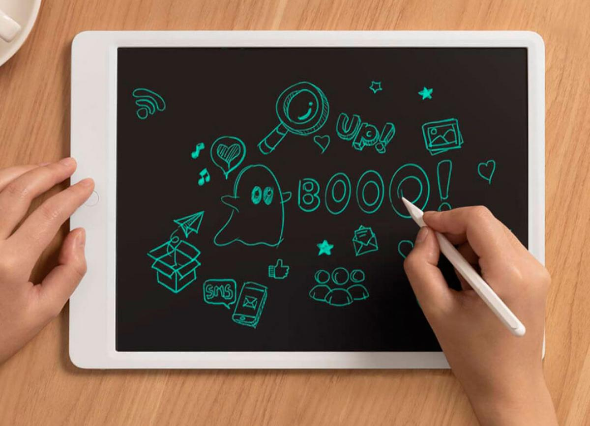

Digital Board
Pizarra para realizar dibujos o tomar notas
Bienvenido a este proyecto en el cual podemos realizar dibujos en canvas con tan solo unas líneas de HTML5, CSS y Javascript.
El proyecto te permite dibujar en la pantalla con el mouse actualmente, en próximas actualizaciones implementaré algo de diseño a los features de color y grosor de la línea para que resulte más atractivo, y también intentare corregir un desfase de la posición cuando se utiliza en móvil en futuras actualizaciones.
Puedes probar este proyecto aquí mismo para ver si te gusta o puedes descargar el código desde el repositorio e implementarlo donde desees.
Ficha técnica
Versión: 1.0.0
Estado: Pendiente de actualización
Tecnologías:
- HTML5
- CSS
- Javascript
Licencia: MIT
Repositorio: Repositorio Guthub